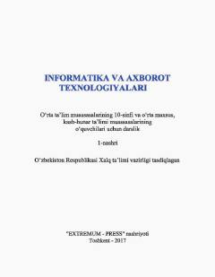

IV10-sinf o'quvchilari uchun informatika va axborot texnologiyalari fanidan o'quv qo'llanma.
Ushbu darslik 10-sinf o'quvchilari uchun mo'ljallangan bo'lib, Microsoft Excel 2010, MS Access 2010 ma'lumotlar ombori va Delphi dasturlash muhitida ishlash asoslarini qamrab oladi. Kitob o'quvchilarga elektron jadvallar, ma'lumotlar bazasini boshqarish va interfaol ilovalar yaratish bo'yicha nazariy hamda amaliy bilimlar beradi.